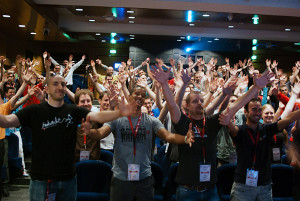
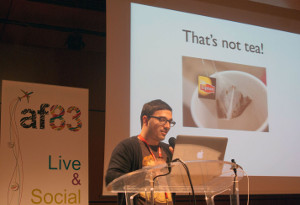
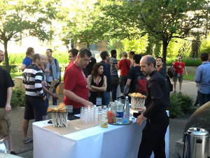
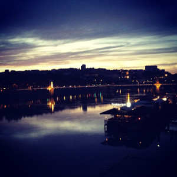

RuLu 2012 has been such a success, going well beyond the expectations of its audience, that we had to run a third edition!
Today, we're delighted to announce the official launch of the third edition of Ruby Lugdunum aka RuLu 2013, which will take place on June 20-21 in Lyon.
We will follow the well-known recipe of RuLu, which has made a reputation of being the greatest Ruby conference in the French provinces: best talks of the moment (conducted in English), gorgeous venues, great atmosphere and nice food (Lyon is the French capital of gastronomy).
There will be about 200 attendees from Lyon and other parts of France, and other European countries, providing an opportunity to know each other during these 2 days.
On Thursday June 20th, there will be 8 speakers at the former Manufacture des Tabacs, now part of the University. Lunch and refreshments will be provided which would leave enough time for networking.
At the end of the day, the dinner will be at Le Koodeta restaurant, a good place for enjoying food and drink while watching sunset.
On Friday June 21st, the second day of RuLu, there will be several workshops to practice further.
After the official closing of RuLu, some fun is still in store, as June 21st coincides with the French Fête de la Musique (World Music Day). There will be a lot of live bands in the streets of Old Lyon.
We are still working on the speaker lineup and those who are interested are welcome to drop us an email. We can already announce that Laurent Sansonneti (of RubyMotion fame) will carry out a workshop session.
Brace yourselves, we will release a batch of Early Bird tickets at the beginning of May.
To conclude, as it is a lot of work to make a conference happen, your support, help and advice are very much welcome. Send love or just say hello at hello@rulu.eu.